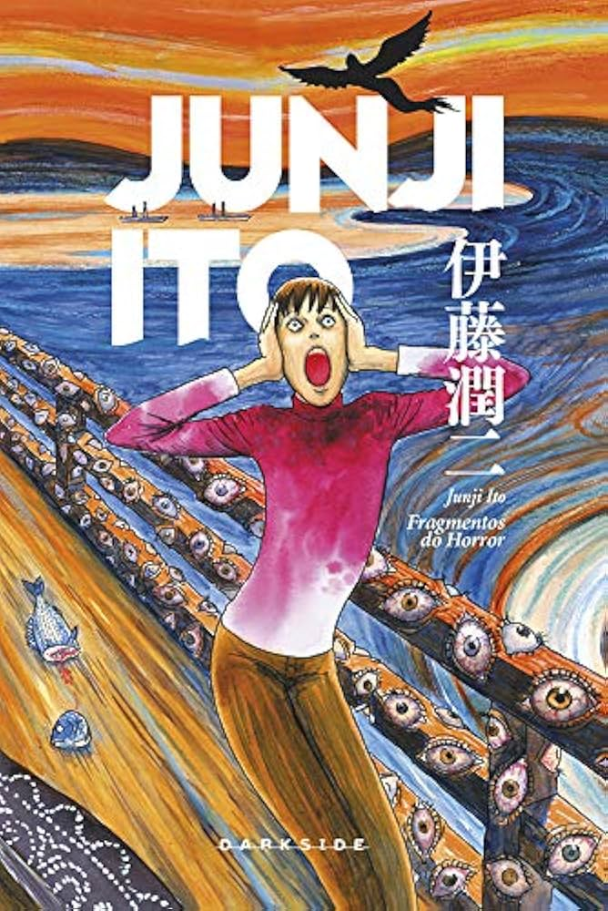
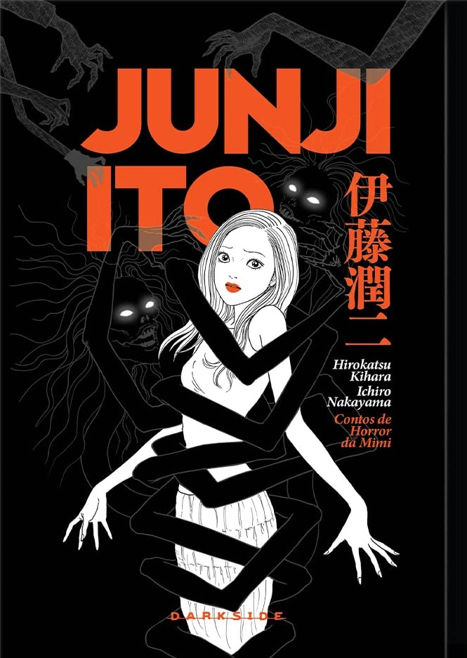
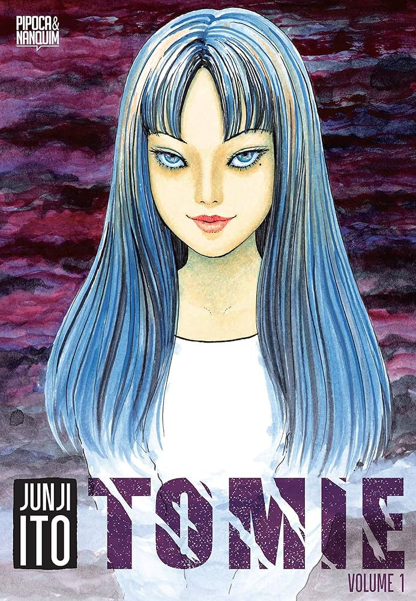
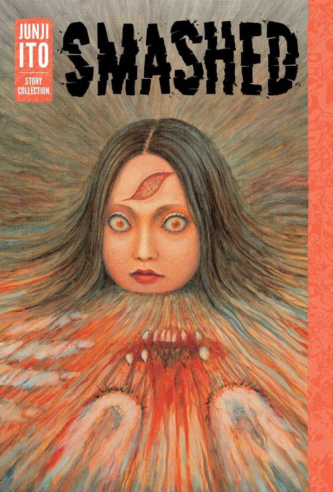

Junji Ito e suas obras
- 
- 
-

- 
- 
Fragmentos do Horror
Fragmentos do Horror é uma coletânea de contos macabros do mestre do terror Junji Ito. O mangá reúne diversas histórias curtas que exploram o grotesco, o psicológico e o sobrenatural, trazendo personagens atormentados por eventos inexplicáveis e perturbações além da compreensão humana.
Contos de Horror da Mimi
Contos de Horror da Mimi é uma coletânea de histórias baseadas em eventos supostamente reais vividos por Mimi, uma jovem que se vê envolvida em situações assustadoras e sobrenaturais. Diferente das obras mais grotescas de Junji Ito, este mangá aposta em um terror mais sutil e psicológico, mergulhando em encontros inquietantes com espíritos, maldições e presenças inexplicáveis com um clima arrepiante e narrativas baseadas no folclore japonês.
A sala de Aula que Derreteu
A Sala de Aula que Derreteu é um mangá curto e perturbador de Junji Ito, repleto de horror psicológico e surreal. A história acompanha Yuuma Azawa, um estudante enigmático que, junto com sua obsessiva irmã Chizumi, espalha o caos por onde passa.
Tomie
Tomie é uma das obras mais icônicas de Junji Ito, que mistura o sobrenatural com o grotesco de maneira arrebatadora. A história gira em torno de Tomie, uma jovem mulher irresistivelmente bela e imortal, capaz de fascinar e enlouquecer qualquer um que a encontre. Sua presença exerce um poder hipnótico sobre os homens, fazendo com que se tornem obcecados por ela, muitas vezes levando a atos de violência extrema.
Smashed
Smashed é uma coletânea de contos curtos de terror psicológico e grotesco de Junji Ito. A obra reúne histórias intensas e perturbadoras que exploram a mente humana em situações extremas, onde o horror não vem apenas do sobrenatural, mas também do comportamento humano, do medo e das obsessões.